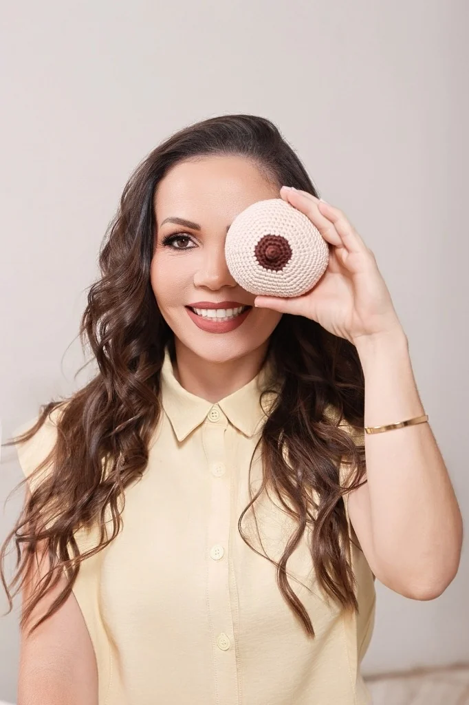

Dói em toda mamada
A dor está forte, persistente ou aumentando?
Amamentar não precisa começar na dúvida. Preparação, avaliação individual e cuidado contínuo para você amamentar com mais segurança — da gestação aos primeiros meses do bebê.
“Acolher primeiro. Avaliar com cuidado. Orientar com clareza.”
Existem sinais que merecem ser olhados com calma. Você não precisa esperar piorar para pedir ajuda.
A dor está forte, persistente ou aumentando?
Seu mamilo está machucado, com crostas ou sangrando?
O bebê parece mamar sem nunca ficar realmente satisfeito?
Ele dorme antes de concluir a mamada ou acorda pouco para mamar?
Você percebe estalos, dificuldade de pega ou perda frequente de vedação?
Você quer continuar, mas está cansada e sem saber o que mudar?
Você não precisa esperar os desafios começarem para se preparar. Antecipe dúvidas sobre pega, posições e primeiros dias na consultoria pré-natal.
Marque os sinais que estão acontecendo agora. Ao final, o WhatsApp será aberto com um resumo pronto para você enviar.
Cada mãe e cada bebê têm uma história diferente. Meu atendimento começa pela escuta e pela observação cuidadosa da mamada. Avalio o conforto da mãe, a pega, a sucção, a vedação e os sinais do bebê para entender o que pode estar interferindo. A partir disso, você recebe orientações práticas, individualizadas e baseadas em evidências.
Conversamos sobre sua história, rotina, expectativas e o que está mais desafiador.
Avalio a mamada, o conforto, a pega, a sucção e os sinais que merecem atenção clínica.
Você compreende o que está acontecendo e recebe os próximos passos de forma prática e acolhedora.
Cuidado materno-infantil em duas frentes integradas: da preparação e assistência ao parto com a Equipe Sarah, até o suporte completo em amamentação e laserterapia.
Vou até você para observar a rotina real: posição, pega, conforto, mamadas e o que está pesando neste momento.
Cuidado complementar para lesões mamilares, sempre dentro de uma avaliação individual e respeitando a indicação profissional.
Observação funcional da sucção, da pega, da vedação e dos movimentos da língua, com orientação sobre quando investigar mais.
Antecipe dúvidas sobre pega, posição, primeiros dias e sinais de uma mamada eficaz, para chegar mais segura ao puerpério.
Apoio contínuo e respeitoso no pré-parto, trabalho de parto e puerpério. Atuação como Enfermeira Obstetra integrando a equipe multidisciplinar da Equipe Sarah em Santa Fé do Sul, Jales e região.
Aplicação de bandagem elástica funcional para auxiliar no manejo de edema, sensação de peso e suporte muscular no puerpério e na amamentação.
Não sabe qual atendimento escolher? Conte pelo WhatsApp o que está acontecendo. Eu ajudo você a entender o próximo passo.
Conversar agora
Sou Rainéria Souza, Enfermeira Obstetra, Consultora em Amamentação e Laserterapeuta, com atuação em recursos complementares como aplicação de Taping pós-parto e mamário. Minha atuação é voltada ao cuidado da mulher e do bebê, desde a gestação até os primeiros meses após o nascimento.
Meu trabalho une conhecimento técnico, escuta e avaliação individual para que você compreenda o que está acontecendo e tenha segurança para tomar decisões sobre o seu cuidado.
Atualmente, também curso Fonoaudiologia, ampliando minha formação e meu olhar para as funções relacionadas ao bebê e à amamentação. Além disso, integro a equipe multidisciplinar de assistência ao parto da Equipe Sarah .
Você me conta o que está acontecendo pelo WhatsApp, sem precisar “organizar tudo” antes.
Definimos o formato: presencial, domiciliar ou online, conforme a sua necessidade.
Observamos a mamada, o conforto, os sinais do bebê e as possibilidades de cuidado.
Você sai com orientações claras e sabe exatamente o que acompanhar depois.
Você não precisa chegar com tudo explicado. A primeira conversa serve para organizar o que está acontecendo e encontrar um caminho possível para você e seu bebê.
Mesmo que esteja cansada, chorosa ou sem saber explicar direito. Eu faço perguntas para entender o contexto.
Explico o que vejo na mamada, quais sinais importam e o que pode ser ajustado na sua rotina.
Com orientações práticas e prioridade definida, sem excesso de informação e sem promessa pronta.
Informação prática para a gestação, o parto, a amamentação e os primeiros dias com o bebê, explicada de um jeito que conversa com a vida real.
As dúvidas mais comuns de mães, gestantes e puérperas reunidas em um só lugar.
Ainda ficou com dúvida? Falar no WhatsApp →A laserterapia é uma terapia de baixa intensidade e, em geral, não é descrita como um procedimento doloroso. A indicação e o protocolo dependem da avaliação individual da lesão.
O taping é a aplicação de bandagem elástica funcional como recurso terapêutico complementar, realizado de forma individualizada após avaliação profissional. No pós-parto, pode ser utilizado como suporte no manejo de edema, sensação de peso e desconfortos musculares, respeitando a recuperação do organismo e as condições da pele. Nas mamas, é um recurso seguro para auxiliar no alívio de edema e desconforto durante o período de amamentação e apojadura, respeitando a anatomia e a fisiologia da lactação.
Os atendimentos são realizados com emissão de recibo para tentativa de reembolso. A aprovação depende das regras e da cobertura do seu plano; vale consultar o contrato antes.
Nem sempre. O mais importante é entender por que o bebê está tendo dificuldade. A indicação de recursos artificiais deve ser individualizada para o seu caso.
Sim, posso realizar uma avaliação funcional da sucção, pega e movimentação da língua e orientar quando é necessário procurar outros profissionais para uma investigação complementar.
Sim. A consultoria pré-natal é justamente para antecipar dúvidas, alinhar expectativas e preparar você para os primeiros dias da amamentação.
Sim. A consultoria online pode ser usada para orientação, organização do manejo e acompanhamento de situações em que o atendimento remoto seja apropriado.
Atuo como enfermeira obstetra na assistência ao parto respeitoso junto à Equipe Sarah. Oferecemos um acompanhamento multiprofissional com foco na segurança e no protagonismo da mulher, atendendo Santa Fé do Sul, Jales e região.
Me conte como está a sua amamentação. A primeira conversa pode ser simples — e já trazer direção.
Quero conversar no WhatsApp